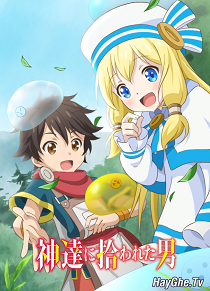

Dưới sự bảo hộ của các vị thần, một cuộc sống giản đơn cùng slime ở thế giới khác đã bắt đầu! Một ngày nọ, tại Nhật Bản, cuộc đời của một doanh nhân tuổi trung niên có tên Ryoma Takebayashi đã chính thức "game over" một cách đột ngột và "thất vọng vì cái sự over" này. Sống ở đời, không biết do nghiệp hay vì lý do gì, cuộc sống của Ryoma chưa bao giờ gặp được may mắn. Nhưng trong cái rủi có cái may. Sau khi chết, ba vị thần vĩ đại đã tìm đến anh và tái sinh anh ta trở thành một đứa trẻ ở thế giới khác, sở hữu kiếm và có ma thuật! Với sự chào đón nồng nhiệt và thiêng liêng nhất từ các vị thần, Ryoma đã quyết định tự mình sống nhàn nhã trong một khu rừng ở thế giới đó. Làm việc một cách cật lực với ma thuật của mình và săn bắn thứ gì đó. Niềm đam mê lớn nhất của Ryoma là nghiên cứu về những thứ mình thuần hóa được. Anh đang đào tạo các slime, bức màn sẽ được vén lên trong thế giới giả tưởng của Ryoma.